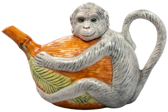
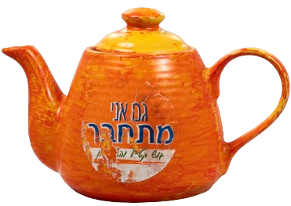

אודות
מי אני, ואיך הכל התחיל?
היי!
אני הדסה צפלביץ, רכזת קהילה, אוספת קומקומים, אמא לשמונה ילדים מקסימים וסבתא לשני נכדים מתוקים.
אז איך הכל התחיל?
קיבלתי ליום הולדת 24 מתנה קומקום בצורה של קוף:

האוסף התחיל בבית שלנו בגוש קטיף והמשיך איתנו בנדודינו עד שהגענו לבית החדש שלנו ביישוב נטע וחידשנו
אותו. שיחזרנו את הארון שהיה לנו בכפר דרום.
באוסף יש קומקומים שמראים את התהליך שעברנו מגוש קטיף עד היום.
כגון:

מה אפשר ללמוד מקומקום?
לכל קומקום יש מיכל, פתח למילוי, פיה (זרבובית), מכסה וידית.
אנחנו לומדים מהמיכל לדעת להכיל, מהפתח למילוי אנחנו לומדים לקבל, אבל מהזרבובית אנחנו לומדים לא לשכוח
גם לתת.
מהמכסה לומדים שלכל קומקום יש מכסה, ומהידית לומדים שתמיד יש מישהו שמחזיק אותנו מלמעלה,
וכשרותחים צריך לדעת להוציא קיטור.
מוזמנים לבקר במוזיאון הקומקומים שלנו ובו מעל 500 קומקומים מכל הסוגים והמינים.
מארצות ותרבויות שונות, מחומרים שונים ומיוחדים ובנושאים מגוונים.
בבית שלנו אנו שמחים לארח ולהיפגש עם אנשים מכל גווני הקשת ובכל הגילאים שבאים לראות את אוסף הקומקמים
ולשמוע את הסיפורים. הבית שלנו ממוקם ביישוב נטע, אליו עברו רוב מפוני כפר דרום.
.